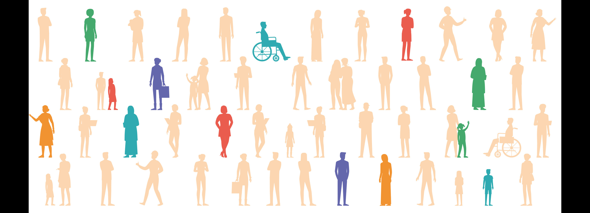
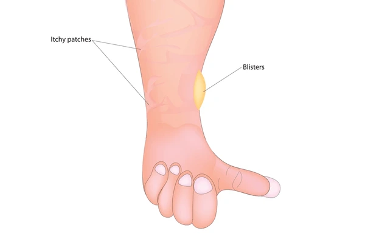

- 
罕見疾病
以下是我們將提供詳細資訊的罕見疾病：
表皮分解性水泡症
- 表皮分解性水泡症（EB） 是一種罕見遺傳性皮膚疾病，由於相關基因突變，導致皮膚極為脆弱，輕微摩擦即會產生水泡與撕裂。
- 症狀： 包含水泡、開放性傷口、疼痛與疤痕；嚴重者內黏膜（如口腔、食道）也會受影響，增加感染、營養不良及皮膚癌等併發症風險。
- 好發族群： 全球每百萬新生兒約 20 人受影響，不分性別與族群。
- 治療方式： 以傷口照護與疼痛管理為主，部分先進基因治療雖有發展，但費用高昂且未普及。

大疱性類天疱瘡
- 大疱性類天疱瘡 是一種罕見自體免疫皮膚疾病，主要導致身體多處（如腹部、大腿、腋下）產生大型水泡，因免疫系統攻擊皮膚基底結構。
- 症狀： 先出現紅癢皮疹，後發展成內含清澈或黃液的水泡，易破裂形成潰瘍。
- 好發族群： 以 60 歲以上長者為主，男女機率相同，歐美較為常見。
- 治療方式： 以類固醇、免疫抑制劑及抗發炎藥物為主，及早治療有助於長期緩解，減少併發症。

肺高血壓
- 肺高壓（PH） 是一種肺動脈壓力升高的慢性疾病，導致心臟右心室必須更費力將血液送至肺部，嚴重時可能造成心衰竭。
- 症狀： 包括呼吸困難、易疲勞、胸痛、頭暈、下肢腫脹與發紺（嘴唇、皮膚發紫），症狀多逐漸惡化，影響生活品質。
- 好發族群： 各年齡層均可能發生，成人最常見，全球分布，致病原因與醫療資源相關。
- 治療方式： 包含血管擴張劑、抗凝血劑、利尿劑、氧氣治療與生活調整，重症可考慮肺移植。及早診斷與積極治療有助於改善預後。

普瑞德威利症候群
- 普瑞德威利症候群（PWS） 是第 15 號染色體特定基因缺失導致的遺傳疾病，通常屬於突變而非家族遺傳。
- 症狀： 新生兒時期肌肉張力低下、吸吮困難、成長遲緩；隨年齡增長出現無法抑制的食慾，導致肥胖。常見智力障礙、行為問題、身材矮小、特徵性面貌、荷爾蒙缺乏等問題。
- 好發族群： 男女發生機率相當，全球盛行率約每萬至三萬人有一例。
- 治療方式： 以荷爾蒙治療、飲食控制、行為訓練及復健為主，合併預防及治療肥胖相關併發症。